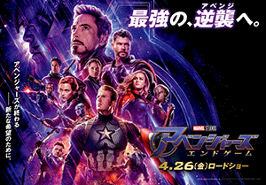
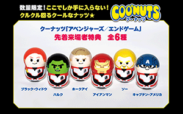
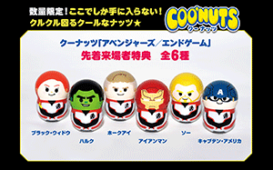
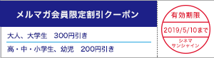
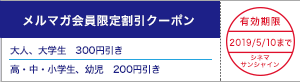

|
シネマサンシャインメールマガジン 2019/4/26号 |
 |
毎月1日は映画サービスデー
どなたさまでも1,100円でご鑑賞いただけます。 次回は来週5/1（水）です！ ※3D、4DX、IMAX、ATMOS、dts-x、ScreenXは別途追加料金が必要となります。 |
オススメ作品
『アベンジャーズ／エンドゲーム』
4/26（金）公開

©2019 MARVEL
破格のメガヒットによって映画史を塗り替え続ける「アベンジャーズ」シリーズが、この春ついに完結。 最凶最悪の敵"サノス"によって、人類の半分が消し去られ、最強チーム"アベンジャーズ"も崩壊してしまった。 はたして失われた35億の人々と仲間を取り戻す方法はあるのか？ 大逆転へのわずかな希望を信じて再び集結したアイアンマン、キャプテン・アメリカ、ソーたちに残されたのは、最強の絆だけ――。 "今はここにいない"仲間のために、最後にして最大の逆襲が始まる！
監督：アンソニー・ルッソ、ジョー・ルッソ
出演：ロバート・ダウニー Jr.、クリス・エヴァンス、クリス・ヘムズワース、スカーレット・ヨハンソン
出演：ロバート・ダウニー Jr.、クリス・エヴァンス、クリス・ヘムズワース、スカーレット・ヨハンソン
『名探偵ピカチュウ』
5/3（金）公開
©2019 Legendary and Warner Bros. Entertainment, Inc. All Rights Reserved.©2019 Pokemon
かつてポケモンのことが大好きな少年だったティムは、ポケモンに関わる事件の捜査へ向かったきり、家に戻らなかった父親・ハリーとポケモンを、遠ざけるようになってしまった。 それから年月が経ち、大人になったティムのもとにある日、ハリーと同僚だったというヨシダ警部補から電話がかかってくる。 「お父さんが事故で亡くなった―」。 複雑な思いを胸に残したまま、ティムは人間とポケモンが共存する街・ライムシティへと向かう。 荷物を整理するため、ハリーの部屋へと向かったティムが出会ったのは、自分にしか聞こえない人間の言葉を話す、名探偵ピカチュウだった。 かつてハリーの相棒だったという名探偵ピカチュウは、事故の衝撃で記憶を失っていたが、一つだけ確信をもっていることがあった……。 「ハリーはまだ生きている」。 ハリーは何故、姿を消したのか？ ライムシティで起こる事件の謎とは？ ふたりの新コンビが今、大事件に立ち向かう！
監督：ロブ・レターマン
出演：ライアン・レイノルズ、ジャスティス・スミス、キャスリン・ニュートン、渡辺謙、〔日本語吹替〕竹内涼真、飯豊まりえ
出演：ライアン・レイノルズ、ジャスティス・スミス、キャスリン・ニュートン、渡辺謙、〔日本語吹替〕竹内涼真、飯豊まりえ
上映作品
4/26（金）公開
『バースデー・ワンダーランド』
ニュース
○ありがとうアベンジャーズ―「アベンジャーズ」の完結編にして、史上最大スケールのイベントムービー『アベンジャーズ／エンドゲーム』ついに公開！
シリーズ全作が世界興行収入ランキングTOP10にランクインするという、空前絶後の“奇跡”を成し遂げた「アベンジャーズ」シリーズ。 その完結編『アベンジャーズ／エンドゲーム』が、ついに公開！
本作は、『アイアンマン』（08）から始まったマーベル・シネマティック・ユニバース（MCU)に一つの大きな区切りをつける集大成の作品となる。
思えば、MCUの快進撃はロバート・ダウニー Jr.演じる『アイアンマン』（08）の成功から始まった。 「MCUは、ロバート・ダウニー Jr.なしでは存在しなかった」とマーベル・スタジオを率いるケヴィン・ファイギは言う。
先日韓国で行われた記者会見で、ロバート・ダウニーJr.自身も「マーベル作品がここまで文化的、社会的ムーブメントになるとは予測できなかった。 当時は自分としても、“居場所”を探していたし、シリーズの成功が続く現状についてはうれしく思っている」と語った。 そして、ファイギは「21本に及ぶ過去のマーベル映画、そしてこの10年間は『エンドゲーム』のためにあった」と断言。 「ファンのために作品をつくるという信念に変わりはない。 だからこそ、この作品が描く決着に、まずは驚いてもらい、そして満足してもらえれば」と感無量の様子で語った。
『アベンジャーズ／エンドゲーム』は世界的に大ヒット間違いなく、この映画を劇場で観られたことが誇りになる、そんな歴史的1本になるであろう。
なお、上映時間は3時間を越す事から、アンソニー・ルッソ監督からは「上映前は飲み物を控えて。 もちろん、途中でトイレに行くタイミングは一切ないよ」と“警告”も！
また、公開初日の4/26より来場者にはオリジナルデザインのフィギュア・クーナッツがプレゼントされる。 アイアンマン、キャプテン・アメリカ、ソーらアベンジャーズのメンバー6人が、劇中に登場する“新スーツ”を着ているデザインは限定デザインとなっているため、激レア！なくなり次第終了となるため、公開とともに劇場へ。

★あなたの感想をジェネレーターで表現！感想キャンペーン実施中！
詳しくは公式HPで
本作は、『アイアンマン』（08）から始まったマーベル・シネマティック・ユニバース（MCU)に一つの大きな区切りをつける集大成の作品となる。
思えば、MCUの快進撃はロバート・ダウニー Jr.演じる『アイアンマン』（08）の成功から始まった。 「MCUは、ロバート・ダウニー Jr.なしでは存在しなかった」とマーベル・スタジオを率いるケヴィン・ファイギは言う。
先日韓国で行われた記者会見で、ロバート・ダウニーJr.自身も「マーベル作品がここまで文化的、社会的ムーブメントになるとは予測できなかった。 当時は自分としても、“居場所”を探していたし、シリーズの成功が続く現状についてはうれしく思っている」と語った。 そして、ファイギは「21本に及ぶ過去のマーベル映画、そしてこの10年間は『エンドゲーム』のためにあった」と断言。 「ファンのために作品をつくるという信念に変わりはない。 だからこそ、この作品が描く決着に、まずは驚いてもらい、そして満足してもらえれば」と感無量の様子で語った。
『アベンジャーズ／エンドゲーム』は世界的に大ヒット間違いなく、この映画を劇場で観られたことが誇りになる、そんな歴史的1本になるであろう。
なお、上映時間は3時間を越す事から、アンソニー・ルッソ監督からは「上映前は飲み物を控えて。 もちろん、途中でトイレに行くタイミングは一切ないよ」と“警告”も！
また、公開初日の4/26より来場者にはオリジナルデザインのフィギュア・クーナッツがプレゼントされる。 アイアンマン、キャプテン・アメリカ、ソーらアベンジャーズのメンバー6人が、劇中に登場する“新スーツ”を着ているデザインは限定デザインとなっているため、激レア！なくなり次第終了となるため、公開とともに劇場へ。

★あなたの感想をジェネレーターで表現！感想キャンペーン実施中！
詳しくは公式HPで
○シネマサンシャイン「おやこシネマ」開催決定
子育て中のママ、パパがお子さま連れで一緒に映画を鑑賞できる上映会を開催いたします。
小さいお子さま連れでの映画鑑賞は…
「びっくりして泣いてしまったら…」
「暗いので子供が怖がるかも…」
「子供がおしゃべりしたり歩き回るかも…」
そんな不安や心配がつきないママ、パパの為の上映会です。
音量が通常よりも小さめで、照明も明るめに設定されており、
小さなお子様でも怖がることなくご鑑賞いただけます。
現在計画進行中！
近日詳細を発表します。 乞うご期待！
小さいお子さま連れでの映画鑑賞は…
「びっくりして泣いてしまったら…」
「暗いので子供が怖がるかも…」
「子供がおしゃべりしたり歩き回るかも…」
そんな不安や心配がつきないママ、パパの為の上映会です。
音量が通常よりも小さめで、照明も明るめに設定されており、
小さなお子様でも怖がることなくご鑑賞いただけます。
現在計画進行中！
近日詳細を発表します。 乞うご期待！
○4DX追加料金が高校生以下半額の500円に！【期間限定】
シネマサンシャインの4DXシアターでは、現在キャンペーン期間中につき高校生以下（高校生・中学生・小学生・幼児）の4DX追加料金（通常 1,000円）が半額の500円になります！
通常鑑賞料金（1,000円）＋4DX追加料金（500円）＝1,500円
※3D作品の場合は上記にさらに400円が加算されます。
※一部特別興行は適用とならない場合があります。
※無料鑑賞（メンバーズ会員無料鑑賞、招待券等）は適用外。
▼シネマサンシャイン4DXシアター導入劇場はこちら
平和島、沼津、大和郡山、北島、エミフルMASAKI、姶良

通常鑑賞料金（1,000円）＋4DX追加料金（500円）＝1,500円
※3D作品の場合は上記にさらに400円が加算されます。
※一部特別興行は適用とならない場合があります。
※無料鑑賞（メンバーズ会員無料鑑賞、招待券等）は適用外。
▼シネマサンシャイン4DXシアター導入劇場はこちら
平和島、沼津、大和郡山、北島、エミフルMASAKI、姶良
○シネマサンシャインの新しい会員サービス『シネマサンシャイン リワード』スタート！
もっともっとオトクに映画を観よう！６ポイントで１回鑑賞無料！毎週木曜は1,100円鑑賞などお得なサービスがいっぱいです！シネマサンシャインアプリから新しい会員サービスへ登録いただけます。 是非ご登録ください。
全劇場で対応開始！
※年会費500円あり
全劇場で対応開始！
※年会費500円あり

○マンガで知る＜IMAX＞、マンガで知る＜4DX＞
知ったつもりでいませんか？実はこんなにすごい「IMAX」「4DX」！マンガでわかりやすく解説します！
 UPIMG_93_gif
UPIMG_93_gif
※シネマサンシャインIMAXシアター（土浦、大和郡山、衣山）
UPIMG_92_gif
※シネマサンシャイン4DXシアター（平和島、沼津、エミフルMASAKI、大和郡山、北島、姶良）
○メルマガ会員限定割引クーポンプレゼント！
メルマガ会員様限定でお得な割引クーポンをプレゼント！
以下の画面をチケット購入時にご提示ください。
PCでご覧のお客様は該当部分を印刷してご提示ください。

以下の画面をチケット購入時にご提示ください。
PCでご覧のお客様は該当部分を印刷してご提示ください。

※有効期限は5月10日までになります。
※割引券1枚で2名様まで有効。 他の割引サービスとの併用はできません。
※特別興行などご利用いただけない場合がございます。
※インターネット購入（e-box、ムビチケ)ではご利用いただけません。
※期間中何回でもご利用頂けます。
池袋、ユーカリが丘、大和郡山、北島、下関、姶良の自動券売機では下記QRをご利用ください。
【一般・大学生】
【高校生以下】
【一般・大学生】
【高校生以下】
ムービークイズ
○前回のクイズ
4/19（金）公開『シャザム！』ですが、日本語吹替え版をとある映画監督が監修しています。 コメディ作品で数々のヒット作品を送り出しているその監督とは誰でしょう。
4/19（金）公開『シャザム！』ですが、日本語吹替え版をとある映画監督が監修しています。 コメディ作品で数々のヒット作品を送り出しているその監督とは誰でしょう。
答え：福田雄一監督
『銀魂！』や「今日から俺は！」などの大ヒットによりコメディ監督としてひっぱりだこの福田監督ですが、今回は初のハリウッド映画の日本語吹き替え版の監修となりました。 日本語吹き替え版の主演は菅田将暉が演じていることでも話題となっています。
『銀魂！』や「今日から俺は！」などの大ヒットによりコメディ監督としてひっぱりだこの福田監督ですが、今回は初のハリウッド映画の日本語吹き替え版の監修となりました。 日本語吹き替え版の主演は菅田将暉が演じていることでも話題となっています。
○今回のクイズ
本日公開の『アベンジャーズ／エンドゲーム』で今作から新たにアベンジャーズに加わるニューヒロインは誰でしょう。
本日公開の『アベンジャーズ／エンドゲーム』で今作から新たにアベンジャーズに加わるニューヒロインは誰でしょう。
答えは、次回のシネマサンシャインメールマガジンで！